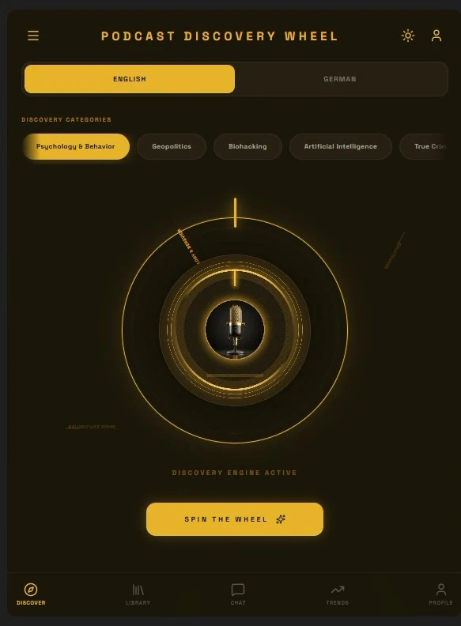
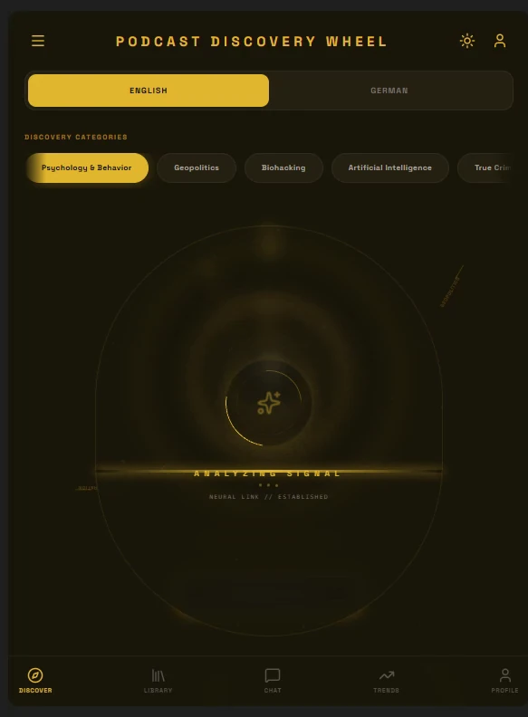
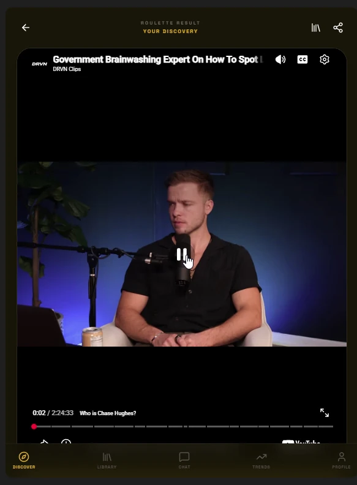
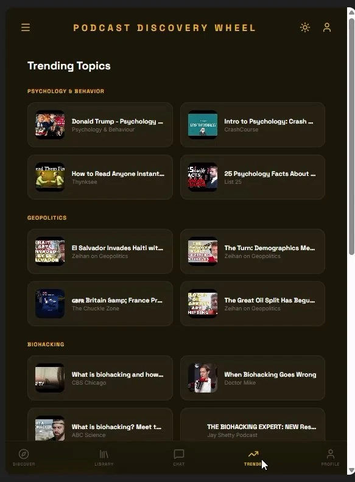
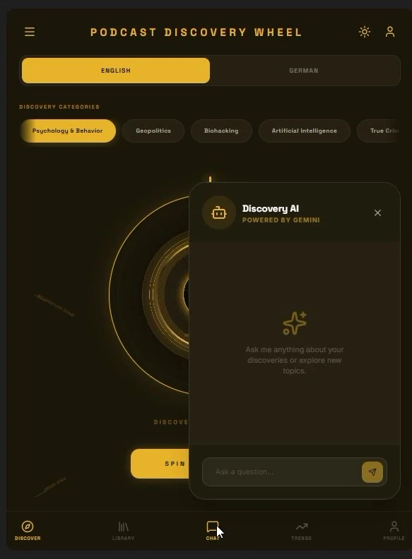
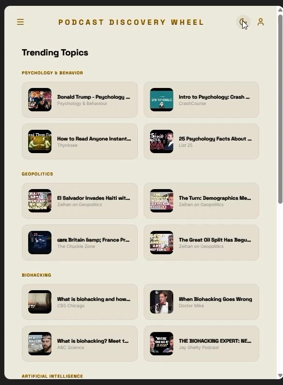

Apps & Games
Podcast Discovery Wheel
The problem with podcasts is not a shortage of them. It is the list. This app replaces the list with a dial: choose a category, spin, and it hands you one episode — with the summary already written and the next three already found.
Overview
The whole interface is built around one object: a set of concentric gold rings with a microphone at the centre, lit like a piece of hardware. Under it, a single line — Discovery engine active — and one gold button. There is nothing else to learn, which is the point.
Categories sit above the dial as pills: Psychology & Behavior, Geopolitics, Biohacking, Artificial Intelligence, True Crime. While it works, the dial collapses into an Analyzing signal / Neural link established state, and then one result arrives — not a grid, one episode — with its length, its view count, a description, and a gold Start Listening Now button.
The spin
Two minutes through the build — the dial, the analysis state, the result, the AI summary, and the discovery chat.
What's in it
- A dial, not a feed — concentric rings, a centre mic and a SPIN button. One outcome per spin, so the decision takes a second instead of an evening.
- Five discovery categories — psychology & behavior, geopolitics, biohacking, artificial intelligence, true crime.
- A loading state with a personality — Analyzing signal / Neural link established while the result is being assembled.
- A result card, not a link — episode artwork, runtime, view count, description and a Start Listening Now button that opens the player in place.
- AI summary — the episode condensed before you commit to an hour of it.
- Similar discoveries — a short list under every result, each item credited to its channel, with a refresh and a see-all.
- Discovery AI — a chat panel powered by Gemini, for asking about what you have found or where to go next.
- Trending topics — the same catalogue laid out by category when you would rather browse than spin.
- Library and profile — saved episodes, account settings and preferences, behind the bottom bar.
- English and German, and a light theme for daylight — the dark one is the default.
Notes
I wrote up what a summary actually needs, why the loading state is design work, and why the chat cannot share the wheel's interface.
Gallery






Under the hood
At a glance
| Type | Podcast discovery app |
|---|---|
| Platform | Browser — phone-shaped layout |
| Input | Discovery category, then SPIN |
| Output | One episode per spin, with summary and similar discoveries |
| AI | Gemini — summaries and the Discovery AI chat |
| Languages | English and German |
| Look | Black and gold, hardware-inspired dial |
| Status | Working build |